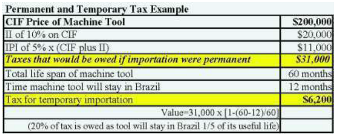

Since 2000, the Government of Brazil has made an allowance for temporary importation of products that are used for a predetermined time period and then re-exported. Brazil has already ratified the International Convention for the Temporary Admission of Goods. Under Brazil’s temporary import program, the import duty (II) and industrialized product tax (IPI) are used to determine the temporary import tax. Products must be used in the manufacture of other goods and involve payment of rental or lease fees from the local importer to the international exporter.
The Brazilian Government is in the process of adopting the ATA carnet, an international customs document that allows importers to temporarily import goods up to one year without payment of normally applicable duties and taxes, including value-added taxes. The adoption of the ATA carnet in Brazil will have a huge impact on customs clearance for U.S. trade show exhibitors that currently face extreme difficulties and delays in getting these temporary imports into Brazil, often writing off the imports as a complete loss. The GOB selected a Brazilian agency to issue and guarantee ATA carnets in April 2014; however, as of this writing, implementation of the program is pending.
The federal and Rio de Janeiro state governments have approved a request by the 2016 Olympic Organizing Committee to not levy taxes on products and services that will be temporarily imported into Brazil for the Olympics. In order to qualify, U.S. companies must document that the product or service will only remain in the country temporarily.
However, this will be accounted for in the procurement guidelines that will be published by the Olympic Committee.
There are very strict rules regarding the entry of used merchandise into Brazil. An example of products falling under this program would be the temporary importation of machine tools. The example in the table below shows that taxes due are proportional to the time frame the imported product will remain in Brazil. This also applies to temporary entry of personal belongings.
